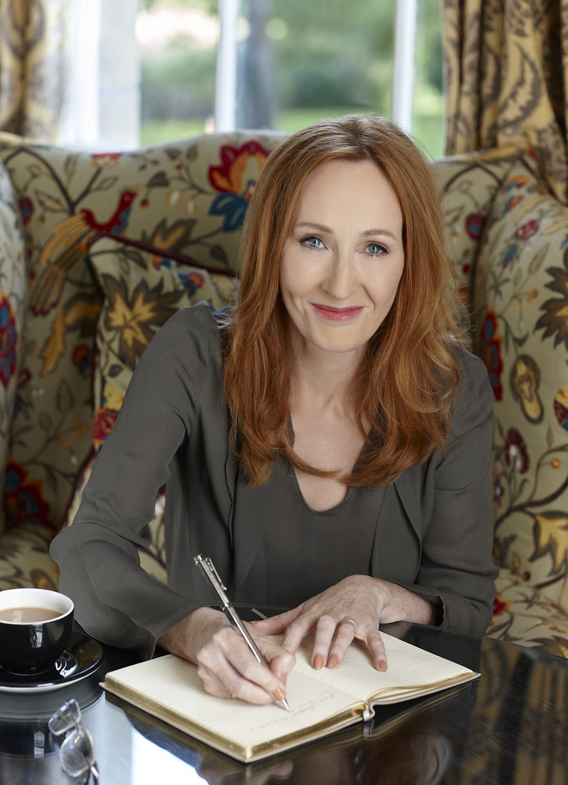

J.K. Rowling
Author of the Popular Harry Potter Series
Author of the Popular Harry Potter Series
Joanne Rowling, best known by her pen name J.K. Rowling, is a British author and philanthropist. She wrote Harry Potter, a seven-volume fantasy series published from 1997 to 2007. The series has sold over 600 million copies, been translated into 84 languages, and spawned a global media franchise including films and video games. The Casual Vacancy (2012) was her first novel for adults. She writes Cormoran Strike, an ongoing crime fiction series, under the alias Robert Galbraith.
Born in Yate, Gloucestershire, Rowling was working as a researcher and bilingual secretary for Amnesty International in 1990 when she conceived the idea for the Harry Potter series while on a delayed train from Manchester to London. The seven-year period that followed saw the death of her mother, the birth of her first child, divorce from her first husband, and relative poverty until the first novel in the series, Harry Potter and the Philosopher's Stone, was published in 1997. Six sequels followed, and by 2008, Forbes had named her the world's highest-paid author.
Joanne Rowling was born on 31 July 1965 at Cottage Hospital in Yate, Gloucestershire, to a middle-class family. She began at St Michael's Church of England Primary School in Winterbourne when she was five. When Rowling was about nine, the family purchased the historic Church Cottage in Tutshill. In 1974, Rowling began attending the nearby Church of England School. Rowling's secondary school was Wyedean School and College, a state school she began attending at the age of eleven and where she was bullied.
Rowling always wanted to be a writer, but chose to study French and the classics at the University of Exeter for practical reasons, influenced by her parents who thought job prospects would be better with evidence of bilingualism. She later stated that Exeter was not initially what she expected but that she enjoyed herself after she met more people like her. She was an average student at Exeter, described as prioritising her social life over her studies, and lacking ambition and enthusiasm. Rowling recalls doing little work at university, .She earned a BA in French from Exeter, graduating in 1987 after a year of study in Paris
Rowling completed Harry Potter and the Philosopher's Stone in June 1995. The initial draft included an illustration of Harry by a fireplace, showing a lightning-shaped scar on his forehead. Her manuscript was submitted to twelve publishers, all of which rejected it. Barry Cunningham, who ran the children's literature department at Bloomsbury Publishing, bought it, after Nigel Newton, who headed Bloomsbury at the time, saw his eight-year-old daughter finish one chapter and want to keep reading. Rowling recalls Cunningham telling her, "You'll never make any money out of children's books, Jo." Rowling was awarded a writer's grant by the Scottish Arts Council to support her childcare costs and finances before Philosopher's Stone's publication, and to aid in writing the sequel, Chamber of Secrets. On 26 June 1997, Bloomsbury published Philosopher's Stone with an initial print run of 5,650 copies. Before Chamber of Secrets was published, Rowling had received £2,800 ($4,200) in royalties.
Rowling received the news that the US rights were being auctioned at the Bologna Children's Book Fair. To her surprise and delight, Scholastic Corporation bought the rights for $105,000. She bought a flat in Edinburgh with the money from the sale. Arthur A. Levine, head of the imprint at Scholastic, pushed for a name change. He wanted Harry Potter and the School of Magic; as a compromise Rowling suggested Harry Potter and the Sorcerer's Stone. Sorcerer's Stone was released in the United States in September 1998. It was not widely reviewed, but the reviews it received were generally positive. Sorcerer's Stone became a New York Times bestseller by December.
The next three books in the series were released in quick succession between 1998 and 2000: Harry Potter and the Chamber of Secrets (1998), Harry Potter and the Prisoner of Azkaban (1999), and Harry Potter and the Goblet of Fire (2000), each selling millions of copies. When Harry Potter and the Order of the Phoenix had not appeared by 2002, rumours circulated that Rowling was suffering writer's block. It was published in June 2003, selling millions of copies on the first day. Two years later, Harry Potter and the Half-Blood Prince was released in July, again selling millions of copies on the first day. The series ended with Harry Potter and the Deathly Hallows, published in July 2007.
Rowling has enjoyed enormous commercial success as an author. Her Harry Potter series topped bestseller lists, spawned a global media franchise including films and video games, and had been translated into 84 languages by 2023. The first three Harry Potter books occupied the top three spots of The New York Times bestseller list for more than a year; they were then moved to a newly created children's list. The final four books each set records as the fastest-selling books in the UK or US, and the series as a whole had sold more than 600 million copies as of 2023. Harry Potter's popularity has been attributed to factors including the nostalgia evoked by the boarding-school story, the endearing nature of Rowling's characters, and the accessibility of her books to a variety of readers.
In 2004, Forbes named Rowling "the first billion-dollar author". Rowling denied that she was a billionaire in a 2005 interview. By 2012, Forbes concluded she was no longer a billionaire due to her charitable donations and high UK taxes. She was named the world's highest paid author by Forbes in 2008, 2017 and 2019. Her UK sales total in excess of £238 million, making her the best-selling living author in Britain. The 2021 Sunday Times Rich List estimated Rowling's fortune at £820 million, ranking her as the 196th-richest person in the UK. As of 2020, she also owns a £4.5 million Georgian house in Kensington and a £2 million home in Edinburgh.
Rowling's Harry Potter series has won awards for general literature, children's literature and speculative fiction. It has earned multiple British Book Awards, beginning with the Children's Book of the Year for the first two volumes, Philosopher's Stone and Chamber of Secrets. The third novel, Prisoner of Azkaban, was nominated for an adult award, the Whitbread Book of the Year, where it competed against the Nobel prize laureate Seamus Heaney's translation of Beowulf. The award body gave Rowling the children's prize instead (worth half the cash amount), which some scholars felt exemplified a literary prejudice against children's books. She won the World Science Fiction Convention's Hugo Award for the fourth book, Goblet of Fire, and the British Book Awards' adult prize the Book of the Year for the sixth novel, Half-Blood Prince.
Rowling was appointed Officer of the Order of the British Empire (OBE) in the 2000 Birthday Honours for services to children's literature, and three years later received Spain's Prince of Asturias Award for Concord. Following the conclusion of the Harry Potter series, she won the Outstanding Achievement prize at the 2008 British Book Awards. The next year, she was made a Chevalier de la Légion d'Honneur by the French president Nicolas Sarkozy, and leading magazine editors named her the "Most Influential Woman in the UK" in 2010. For services to literature and philanthropy, she was awarded the Order of the Companions of Honour (CH) in 2017.
Many academic institutions have bestowed honorary degrees on Rowling, including her alma mater, the University of Exeter, and Harvard University, where she spoke at the 2008 commencement ceremony. She is a fellow of the Royal Society of Literature (FRSL), the Royal Society of Edinburgh (HonFRSE), and the Royal College of Physicians of Edinburgh (FRCPE). Rowling shared the British Academy Film Award (BAFTA) for Outstanding British Contribution to Cinema with the cast and crew of the Harry Potter films in 2011. Her other awards include the 2017 Laurence Olivier Award for Best New Play for Harry Potter and the Cursed Child, and the 2021 British Book Awards' Crime and Thriller prize for the fifth volume of her Cormoran Strike series.
Aware of the good fortune that led to her wealth and fame, Rowling wanted to use her public image to help others despite her concerns about publicity and the press; she became, in the words of Smith, "emboldened ... to stand up and be counted on issues that were important to her". Rowling's charitable donations before 2012 were estimated by Forbes at $160 million. She was the second most generous UK donor in 2015 (following the singer Elton John), giving about $14 million.
Long interested in issues affecting women and children, Rowling established the Volant Charitable Trust in 2000, named after her mother to address social deprivation in at-risk women, children and youth. She was appointed president of One Parent Families (now Gingerbread) in 2004, after becoming its first ambassador in 2000. She collaborated with Sarah Brown on a book of children's stories to benefit One Parent Families. Together with the MEP Emma Nicholson, Rowling founded the charity now known as Lumos in 2005. Lumos has worked with an orphanage west of Kyiv, Ukraine since 2013; after the 2022 Russian invasion of Ukraine, Rowling offered to personally match up to £1 million in donations to Lumos for Ukraine. Later in 2022, during her advocacy against the proposed Gender Recognition Reform (Scotland) Bill, Rowling stated she had founded and would fund Beira's Place, a women-centred rape help center to provide free support services for biological women survivors of sexual violence. She has donated several hundred thousand pounds to help women lawyers flee from the Taliban's control, helping hundreds of Afghans escape.
Rowling has made donations to support other medical causes. She named another institution after her mother in 2010, when she donated £10 million to found a multiple sclerosis research centre at the University of Edinburgh. She gave an additional £15.3 million to the centre in 2019. During the 2012 Summer Olympics opening ceremony, accompanied by an inflatable representation of Lord Voldemort, she read from Peter Pan as part of a tribute to the Great Ormond Street Hospital for Children. To support COVID-19 relief, she donated six-figure sums to both Khalsa Aid and the British Asian Trust from royalties for The Ickabog.
Several publications in the Harry Potter universe have been sold for charitable purposes. Profits from Fantastic Beasts and Where to Find Them and Quidditch Through the Ages, both published in 2001, went to Comic Relief. To support Children's Voice, later renamed Lumos, Rowling sold a deluxe copy of The Tales of Beedle the Bard at auction in 2007. Amazon's £1.95 million purchase set a record for a contemporary literary work and for children's literature. Rowling published the book and, in 2013, donated the proceeds of nearly £19 million (then about $30 million) to Lumos. Rowling and 12 other writers composed short pieces in 2008 to be sold to benefit Dyslexia Action and English PEN. Rowling's contribution was an 800-word Harry Potter prequel. When the revelation that Rowling wrote The Cuckoo's Calling led to an increase in sales, she donated the royalties to ABF The Soldiers' Charity (formerly the Army Benevolent Fund).